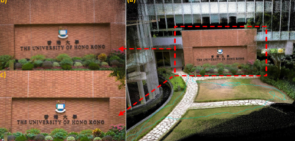
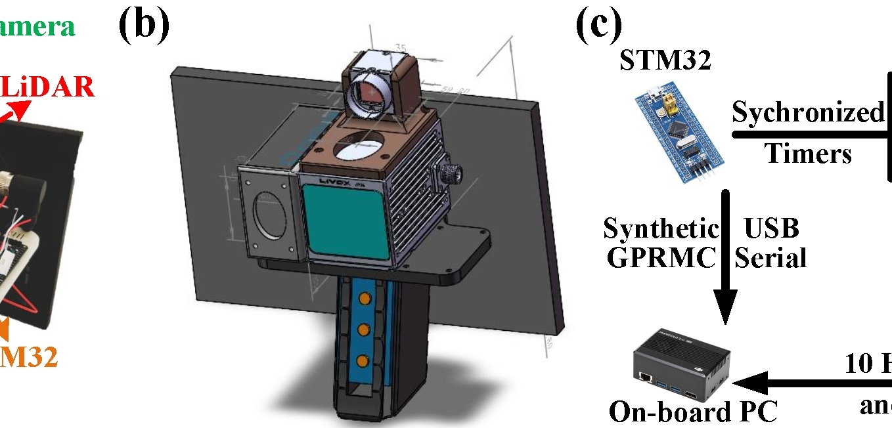

FAST-LIVO1
建立从“实验室可运行”到“真实场景可部署”的第一代工程基线。
GitHub：https://github.com/hku-mars/FAST-LIVO | arXiv：https://arxiv.org/abs/2203.00893
项目定位
类型：LiDAR-Inertial-Visual Odometry
状态：✅ 已完成（代表作）
主线位置：Phase A（前端融合贯通）
核心价值：把 LiDAR + Camera + IMU 紧耦合链路打通，形成后续 FAST-LIVO2 的可复用起点。
核心亮点
多传感器紧耦合状态估计（LiDAR × Vision × IMU）
兼顾实时性与精度的工程实现
具备跨平台部署潜力（x86 / ARM）
为后续全局优化与表示扩展提供稳定前端输入
效果展示
FAST-LIVO1 效果视频

FAST-LIVO1 复现教程视频

关联项目
下一阶段： FAST-LIVO2
后端补强： Global-LVBA
工程部署支持： FAST-Calib、LIV-Handheld